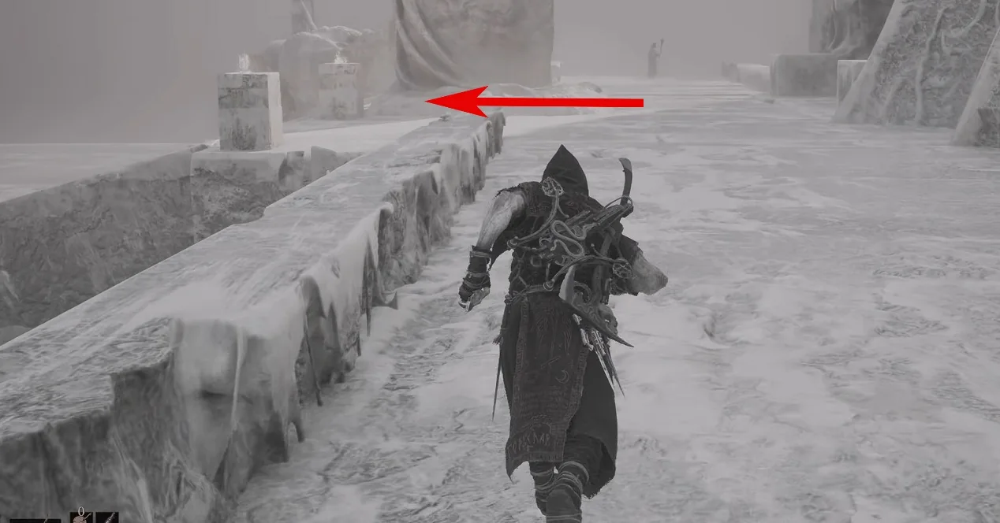
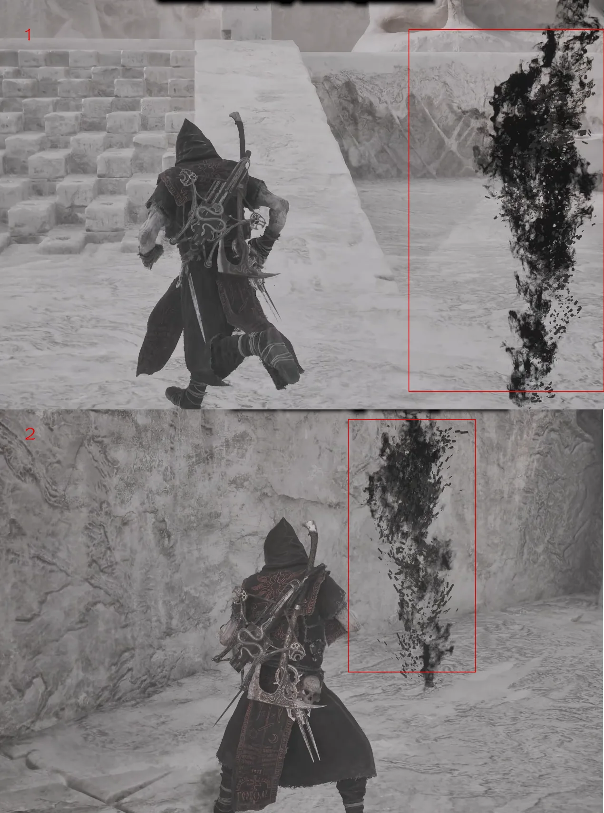
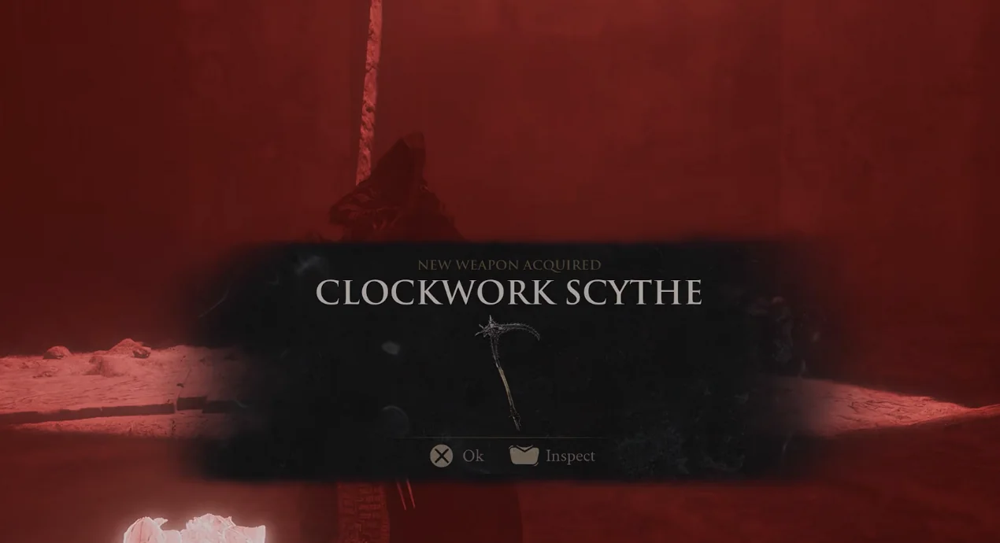

Start at The Silent Steps Beacon, follow Sariel's route to the Chamber of Becoming, and complete the final fight by breaking the four corner obelisks.
Region
Mammon
Starting point
The Silent Steps Beacon
Unlock
Sariel
Route 01Travel to The Silent Steps Beacon.

Route 02Use the portal and move forward. Turn left to enter the platform shown.Route 03Defeat Sariel in the first encounter.

Route 04After the first victory, follow the smoke trail to the stone door. It opens automatically.Route 05Continue to the end of the route and enter the Chamber of Becoming. Enemies on this approach can be bypassed if you only want the Shell.Route 06Continue through Sariel's encounters until the final chamber.Route 07In the final fight, break all four corner obelisks. If they remain, Sariel continues to revive.

Route 08Defeat Sariel to receive the Clockwork Scythe.Route 09Interact with the body and choose Inhabit Unknown Shell to unlock Sariel.